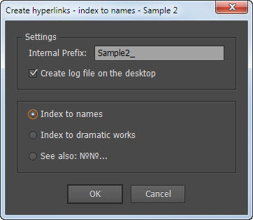
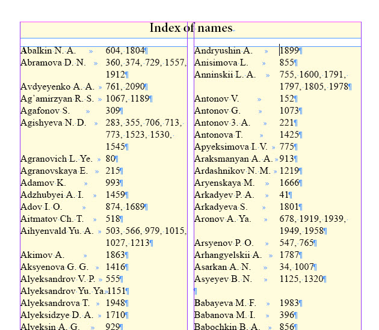
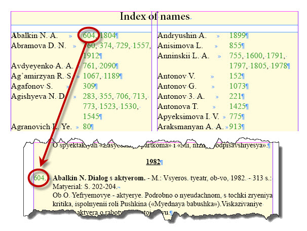
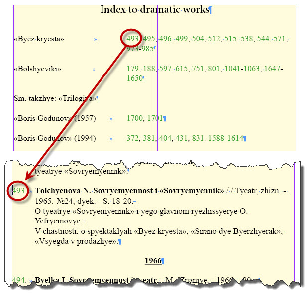
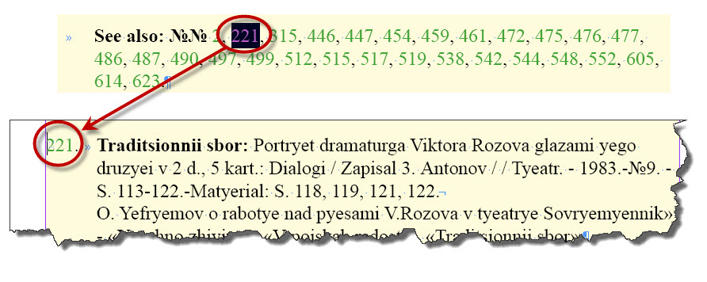
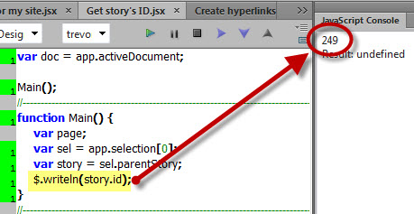
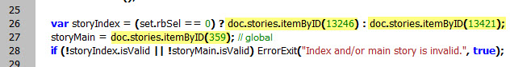
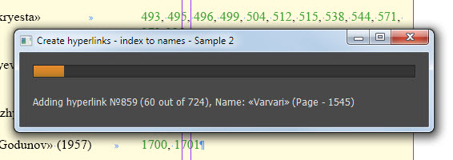

Sample 2
Here is another script. It´s much simpler than Sample 1 but it has some interesting features. It handles three different types of hyperlinks.
- Hyperlinks in “Index to names” section
- Hyperlinks in “Index to dramatic works” section
- “See also:” hyperlinks

Here´s how the “Index to names” section looks like before running the script — pretty much the same as in the Sample 1, but now the numbers point to the comment numbers in the comments section in main text flow instead of page numbers.

And after.

Another section is called “Index to dramatic work”. The only difference is that it handles the text between quotes – the name of a play – instead of the first word in paragraph.

See also: – type of hyperlinks is quite different: they are scattered in the main text flow.

The script has to handle three stories at the same time. The easiest way do to this is reference them by ID. I wrote a simple Get story´s ID script: simply select some text, or a text frame, or place the cursor into the script and run it from ESTK.

Use the ID-es to reference the stories.

In practice, it´s much more convenient to work with a document in this way: you don´t have to care about making a correct selection.
The “Sample 2” script has also a progress bar that displays info about the current hyperlink and creates a log file on the desktop.

Download the script from here and the Sample-2 document from here.